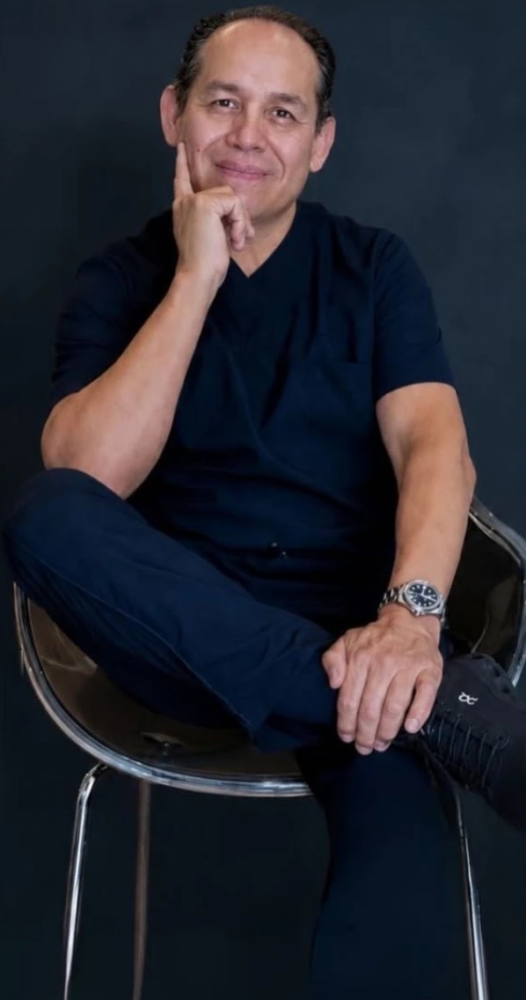
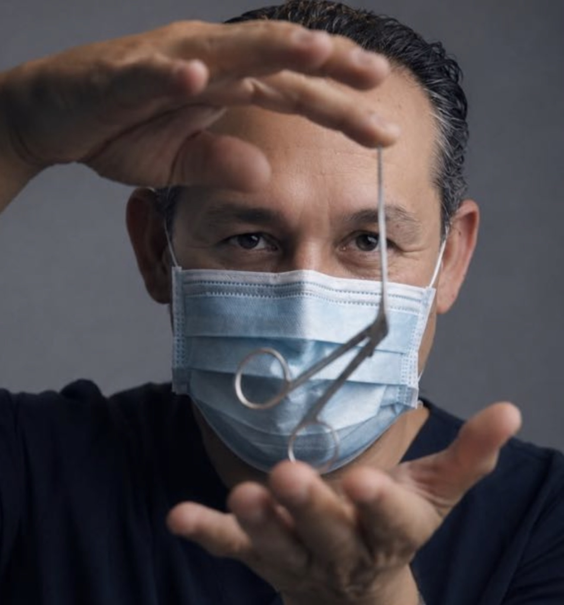
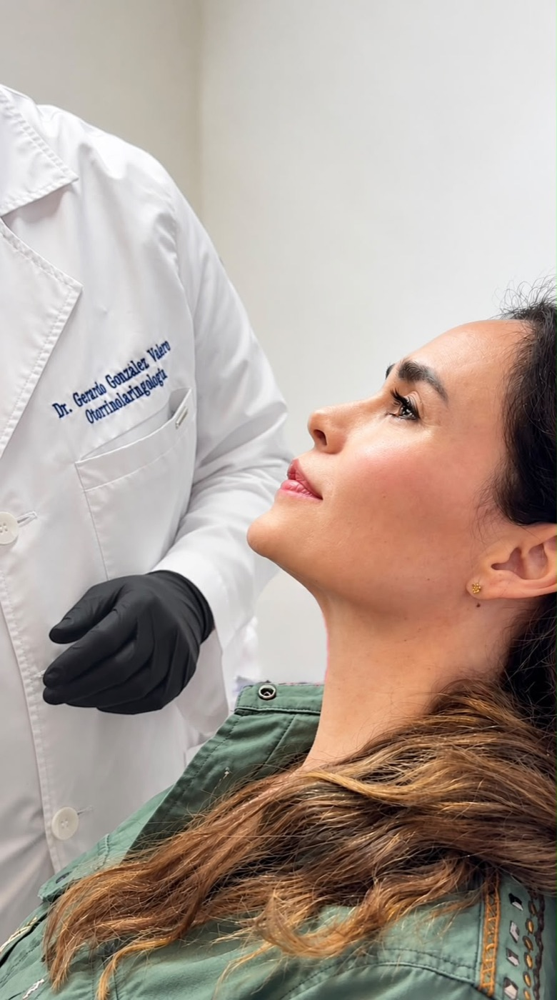
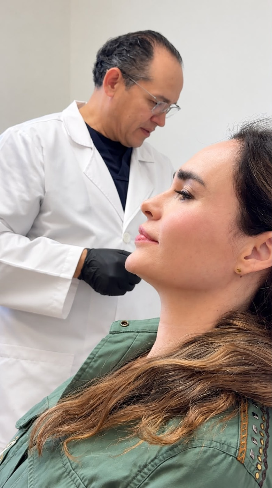

Nariz y senos paranasales
- Rinoplastia y septoplastia
- Alergia respiratoria
- Sinusitis y obstrucción nasal
- Endoscopia nasal
ORL Médico especialista en oídos, nariz y garganta en San Luis Potosí
Rinoplastia funcional y estética y cirugía de cabeza y cuello. 26 años de práctica privada y certificación vigente del Consejo Mexicano de Otorrinolaringología.
Más de 390 opiniones de pacientesVerificadas en Doctoralia. Léelas aquíLa cirugía de nariz debe cuidar la función junto con la apariencia. Si solo hace falta respirar mejor, es una cirugía funcional; si buscas un cambio estético, se evalúan las proporciones adecuadas para tu rostro, sin comprometer nunca la respiración.
Es un procedimiento científico y artístico: requiere empatía, formación médica y un alto sentido estético de las proporciones.
Diagnóstico apoyado en tecnología para enfermedades de la audición, alergia respiratoria, problemas del sueño, voz y vías respiratorias, con tratamiento médico o quirúrgico cuando es necesario.
Tratamientos mínimamente invasivos aplicados por el especialista. En tu valoración te explicamos zonas, duración del efecto y cuidados.
Desliza para comparar. Todos los casos se publican con autorización firmada del paciente y con las mismas condiciones de fotografía.
Los resultados varían en cada paciente. Las imágenes son ilustrativas y no garantizan un resultado igual.

TRAYECTORIA
Normalmente hay de 2 a 3 semanas de espera, según la agenda. Reserva en Doctoralia o por WhatsApp.
Revisión por fuera y por dentro con endoscopia, fotografías de perfil y simulación de los cambios en tiempo real.
En quirófano de hospital, con anestesia general. Dura en promedio 2 horas y no se usan taponamientos nasales.
Instrucciones de cuidado por escrito y revisiones a los 8 días, 15 días y un mes.
Espacio para el testimonio de un paciente, con su autorización.
Nombre o iniciales · Rinoplastia
Espacio para el testimonio de un paciente, con su autorización.
Nombre o iniciales · Septoplastia




¿No encuentras tu pregunta? Escríbenos por WhatsApp y te respondemos en horario de consulta.
Horario de consulta
Con las técnicas actuales el dolor es mínimo. Muchos pacientes comentan que no les dolió y que fue más incómoda la colocación de la vía intravenosa en el brazo.
Depende de cada caso. En algunas ocasiones el paciente pasa una noche en el hospital en vigilancia y cuidados. Te lo indicamos desde la valoración.
En promedio 2 horas, en quirófano de hospital y bajo anestesia general.
No. Respiras por la nariz de inmediato: no se colocan taponamientos nasales, solo férulas y vendajes externos.
Por lo general, dos semanas.
A los dos meses de la cirugía.
No es lo más común. Existe un pequeño riesgo de queloide en la cicatriz, pero se reduce con medicamentos preventivos durante la cirugía y el postoperatorio.
Sí. La rinoplastia se planea para cuidar la función respiratoria junto con la apariencia; la valoración con endoscopia define qué necesita tu nariz por dentro y por fuera.
Revisiones a los 8 días, 15 días y un mes, además de instrucciones de cuidado por escrito.
Normalmente de 2 a 3 semanas, según la disponibilidad de la agenda.
Av. de los Pintores 235, Col. Burócratas del Estado, C.P. 78213, San Luis Potosí, S.L.P.
Lunes a viernes: 10:00 a 14:00 y 16:30 a 19:30 h
Sábado: 10:00 a 14:00 h